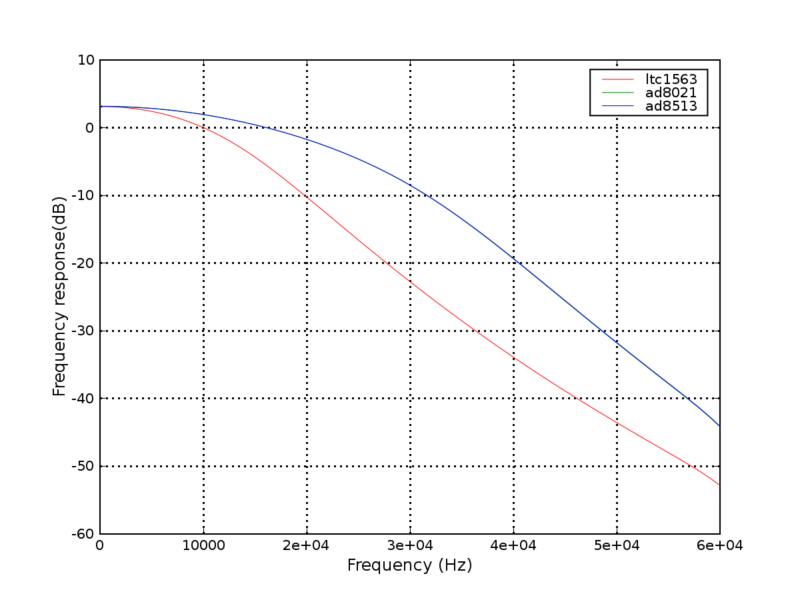
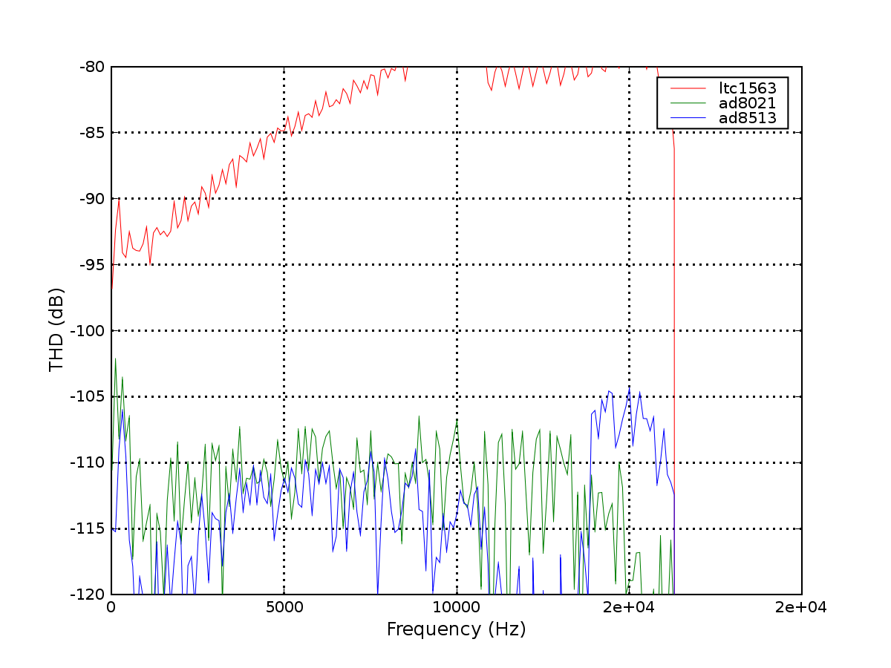

| SCLK out of FPGA |
4 ns |
| cross 1st ISO |
15 ns |
| SCLK to SDOUT |
18 ns |
| cross second ISO |
18 ns |
| into FPGA |
4 ns |
| setup |
2 ns |
| TOTAL |
61 ns |
 Note
then that the low bits are -all- being triggered; this suggests some
really fundamental signal integrity problems.
Note
then that the low bits are -all- being triggered; this suggests some
really fundamental signal integrity problems. | Test |
|
| Frequency Response, via 4.097Vpp
input |
 |
| THD+N, using 4.097 Vpp input |
|
| Harmonic Distortion (sum of
harmonics 2+3) |
 |